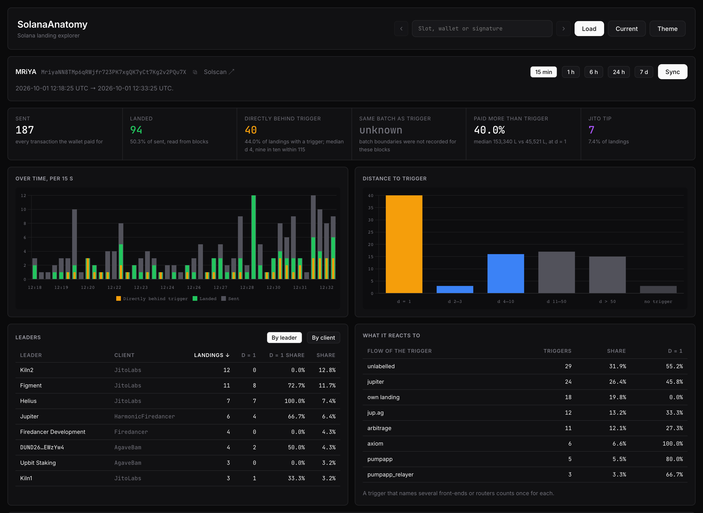
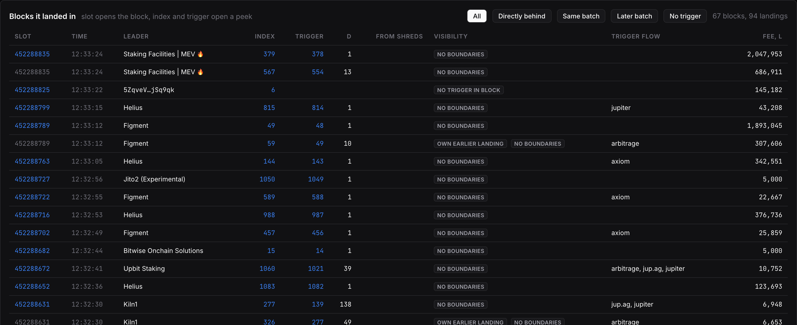
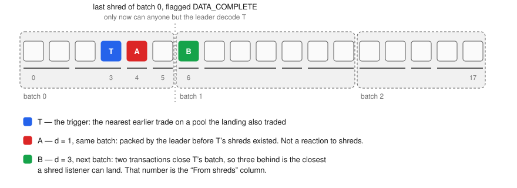
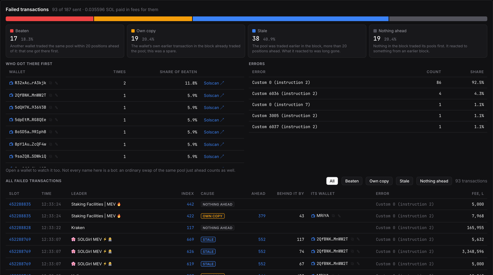
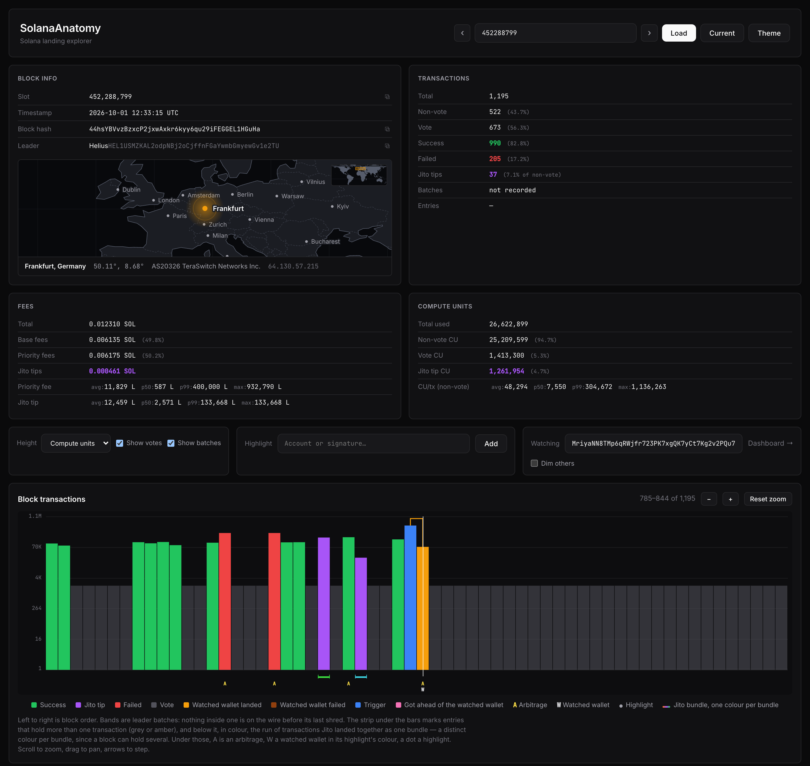
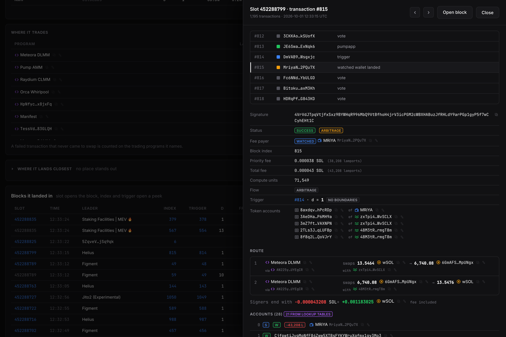
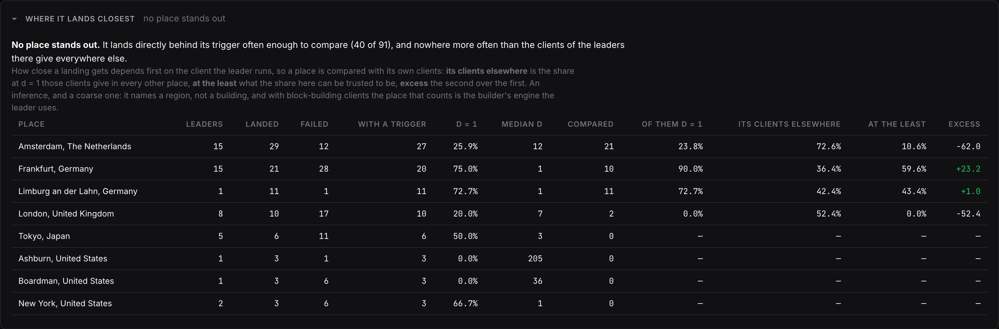
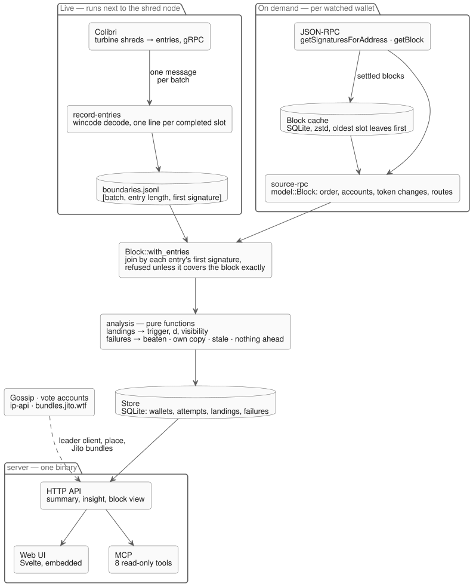

What a transaction reacted to, how far behind it landed, and whether it could have seen its trigger on the wire at all — a landing explorer for Solana arbitrage
An arbitrage bot's result is a position in a block. An explorer will tell you that a transaction landed; it will not tell you what it was chasing, who else was chasing it, or by how many positions it lost. SolanaAnatomy reads every block a watched wallet has a transaction in and answers that for each one: what the transaction reacted to, how far behind it landed, and — when it failed — who took the opportunity first.
I built it to measure Lumen against the bots it competes with. You add a wallet, yours or a rival's, and both get the same dashboard. That is the point: every number is read off the public chain, so a competitor is as legible as your own bot.
The part I could not get from any explorer is the last question in the title. A leader does not publish transactions one at a time, it publishes them in batches of shreds, and a transaction that sits in the same batch as the trade it appears to follow cannot have learned of that trade from the shred stream. SolanaAnatomy records those batch boundaries from my own shred node and draws them over the block.

Nothing on chain names a trigger, so it has to be inferred, and the rule is deliberately small:
Take a successful transaction of the watched wallet and the token accounts whose balances it changed.
Drop the ones the wallet owns. What is left is the pool side: the vaults.
Walk back through the block. The nearest earlier successful transaction that moved one of those vaults is the trigger.
The distance d is the landing's index minus the trigger's. d = 1 is directly behind — the backrun position, and the only one that is certain to see the price the trigger left.
The trigger is then labelled by what kind of flow it is: the front-end or router it names (Jupiter, jup.ag, Photon, Axiom, GMGN, the pump.fun app), or arbitrage when the trigger itself traded in a circle. That last label matters: a trigger that is an arbitrage is usually a rival that got to the pool first, not the trade that opened the opportunity. A trigger that is the wallet's own earlier landing is flagged as well, so a bot answering itself does not count as a win.

Position alone does not say whether a bot was fast. A leader records transactions into entries, serialises a run of entries together, cuts those bytes into shreds, and flags the last shred of the run DATA_COMPLETE. That run is a batch, and it is the unit of visibility: nobody outside the leader can decode any transaction of a batch before its last shred has arrived.

Once the batches are drawn, two landings that look alike stop looking alike:
Same batch. The leader packed the landing before the trigger's shreds existed. Whatever that transaction reacted to, it was not the shred stream — it either saw the trade some other way, or the nearest trade on the pool is not what it was answering.
Later batch. The trigger was on the wire first, and the batch gives a floor. If k transactions follow the trigger inside its batch, a shred listener cannot land closer than k + 1 behind. The dashboard prints that number as From shreds next to the real d, so a d of 3 can read as “three behind, and three was the best there was”.
JSON-RPC getBlock returns transactions in order and nothing about entries or batches. That structure exists only in the shreds, so it comes from Colibri — my shred node, which joins gossip as a plain unstaked peer, receives turbine shreds, repairs the gaps and streams one gRPC message per completed batch. solana-anatomy record-entries follows that stream and appends one JSON line per completed slot: for every entry its batch number, its length, and the signature of its first transaction.
The codec is the validator's. Batches are decoded into agave's own solana-entry type through wincode, which is what they were encoded with. serde with bincode looks equivalent and loses alignment on part of mainnet's transactions.
A partial slot is not a slot. A slot is written only when the stream marks it complete and every one of its batches decoded. A slot with a hole would shift every later index, so it is dropped rather than guessed at.
The join is checked, then trusted. The recording and the RPC block come from two different machines. Block::with_entries walks the recorded entries over the block's transactions and requires each entry to start at the exact signature the recorder saw, and all of them together to cover the block exactly. One mismatch and the block stays without boundaries: the UI says no boundaries instead of drawing bands that might be wrong, and the CLI reports how many blocks were attached and how many refused.
The screenshots on this page come from a local run against plain RPC with no recording loaded, which is why their visibility column reads “no boundaries”.
A failed arbitrage is included in the block, reverts, and still pays its fee. It also leaves no balance changes, so its pools cannot be read the way a landing's are. They are read off the accounts it asked to write to instead, and the walk back is stricter: an earlier transaction counts only if it moved at least two of those accounts. A pool has two vaults; sharing one account is just a common token account.
| Cause | What the block shows |
|---|---|
| Beaten | Another wallet traded the same pool within 20 positions ahead. It got there first. |
| Own copy | The wallet's own earlier transaction in the block already traded the pool. This one was a spare. |
| Stale | The pool was traded earlier in the block, but more than 20 positions ahead. What it reacted to was long gone. |
| Nothing ahead | Nothing in the block traded its pools first. It reacted to something from an earlier block. |
The 20-position reach is measured, not guessed. On busy pools some transaction has almost always traded the pool earlier in the block, and 85% of the time it is more than five positions ahead — that is traffic, not a rival. The constant is marked in the code as a stopgap: once boundaries are recorded for every block, the leader's batch replaces it.
For a transaction that was beaten the block view goes one step further and finds what the winner reacted to, so a loss reads as a chain: the trade, the rival directly behind it, my transaction behind the rival. Over a window the same data becomes a table of rivals — which wallets get ahead, and how often.

Every transaction of the block is a bar, left to right in block order. Height is compute units, priority fee, total fee or Jito tip. Colour says what it is: successful, Jito-tipped, failed, a vote, a landing or a failure of the watched wallet, a trigger, a rival that got ahead. Under the bars a strip marks entries that hold more than one transaction and the runs Jito landed together as one bundle, a colour per bundle — a bundle is not something the chain records, so those come from Jito's own bundle explorer. Leader batches, where they were recorded, are the bands behind everything.

The chart is a canvas drawn by hand, because a block is a thousand-plus bars that have to follow the mouse. There is a small script in the repository that sweeps the pointer across the chart and times every move against the 16.7 ms frame budget, with and without highlights, so a slow redraw shows up as a number rather than a feeling.
Any index opens a peek over the page: who paid, what the transaction did with tokens hop by hop, and its neighbours in the block. Routes are rebuilt from the parsed inner instructions — every token transfer is filed under the program that invoked it, so a swap on a pool becomes one hop with what was paid and what came back. A transaction whose swaps end in the asset they began with is marked as an arbitrage, wrapped and native SOL counted as one asset.

Every landing happens with a leader, and the leader decides more than the bot does. For each one SolanaAnatomy knows the client it runs, from gossip — Agave, Jito, Firedancer, Frankendancer, BAM, Harmonic — whether its TPU address points at a block-building proxy, its stake, and where its node is, from the address it gossips.
That allows one more question: is there a place where this wallet lands directly behind its trigger more often than it should? Asked naively the answer is always “wherever the Jito leaders are”, because how close a landing gets depends on the client first. So a place is compared with its own clients:
Expected — the share of d = 1 landings the same clients give in every other place, in the mix they have here.
At the least — the share observed here, taken at the lower end of the 95% Wilson interval, so that 13 of 16 does not outrank 588 of 798.
Excess — the second minus the first. A place stands out only above zero, with at least fifty comparable landings across at least three leaders: one validator that always lands close is how that validator is set up, not a place.
The verdict is one of strong, moderate, weak, no place stands out, or cannot be placed for a wallet that rarely lands at d = 1 to begin with. It is an inference and a coarse one, and the page says so above the table: it names a region, not a building.


Eleven crates, one direction. model has no I/O and no Solana crates; analysis is pure functions over it. A block is described the same way whatever produced it, so analysis never learns where its input came from — and every rule on this page is tested on hand-built blocks of a handful of transactions, with no network anywhere near the test.
Keep what the node said, not what you made of it. The block cache stores the node's raw getBlock answer, zstd-compressed in SQLite, oldest slot leaving first under a size cap. An analysis added tomorrow reads the blocks already on disk; nothing is fetched twice. Only blocks older than two minutes are kept — a younger one may still be replaced by another fork.
A sync that can stop. History first, then every block the wallet has a transaction in, each recorded whole and for every watched wallet that appears in it. Stop it at any point and the next sync continues from where it was.
One file is the deployment. The Svelte UI is compiled into the binary, the state is two SQLite files. It runs on the same one-gigabyte box as the live bot, and that is where its constants come from: two block readers instead of eight, because eight held getBlock answers at once and pinned the cgroup's memory cap; zstd level 3 instead of 9, because that is 8% more disk for 37% less CPU.
The dashboard as tools. The server speaks the Model Context Protocol on /mcp: eight read-only tools over the same handlers the pages use, one of them a guide that tells the assistant how to read every field. “Why did it lose to this wallet in the last hour” becomes a question I can ask instead of a table I have to read.
Position is not speed. A landing directly behind its trigger looks like a win and one three behind looks like a loss, until the batches are drawn and the first turns out to be something the bot never raced for and the second the best position that existed.
A heuristic has to say that it is one. The trigger is a guess, the place is an inference, the boundaries can fail to match. Each of them has a way to answer “I do not know” — no trigger in block, cannot be placed, no boundaries — and that answer is worth more than a confident wrong one.
Measure the constant before writing it down. The reach of 20, the two workers, the compression level: each started as a guess and each has the measurement next to it in the code.
The repository is private, for the same reason Lumen's is.